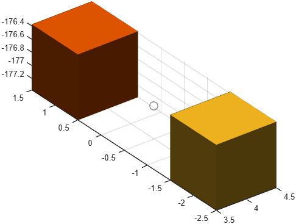

Spherical joint
Class phx.SphericalJoint | Superclass: phx.base.Joint
phx.SphericalJoint realizes a kinematic constraint with three
degrees of freedom: free rotation about the X, Y and Z axes (a ball joint). The two bodies are
pinned together at the given connection points but may rotate freely relative to one another.
joint = phx.SphericalJoint(bodyA,bodyB) creates a joint between two
bodies attached at their origins. Use PointA and
PointB to set custom connection points.
| Argument | Type | Description |
|---|---|---|
| bodyA, bodyB | phx.Body (scalar) | The two bodies connected by the joint. |
| Property | Type / Default | Description |
|---|---|---|
| PointA | [0 0 0] | Connection point in the local space of body A. |
| PointB | [0 0 0] | Connection point in the local space of body B. |
| Overlay | false | Draw the joint as an overlay (always on top). |
Reaction feedback (ForceA, TorqueA,
ForceB, TorqueB) and the
MutualCollisions switch (collisions between the connected bodies,
default false) are inherited from
phx.base.Joint.
clf; view(3); axis equal; grid on; camlight headlight; B = phx.Body("Position", [4 1 0]); C = phx.Body("Position", [4 -2 0]); phx.SphericalJoint(B, C, "PointA", [0 -1.5 0], "PointB", [0 1.5 0], "Color", 0.5); sim = phx.Simulation; sim.step(6, 600, 1); delete(sim);
